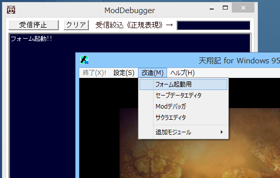
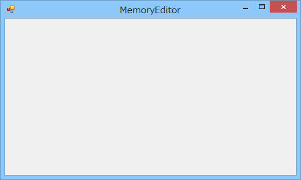
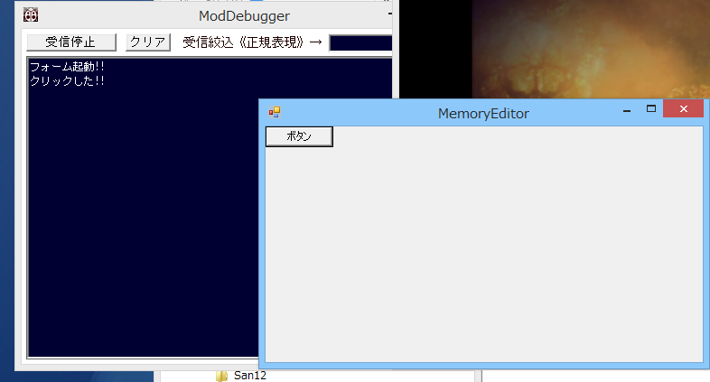

ScenarioModは、元々は天翔記やTSMod.dllと同じ、C/C++ ネイティブで「インラインアセンブラ＋ Win32 SDK」で書かれていました。
これらは、「極めて高速にキビキビ動作する」「CPU１命令を変更するような細かな処理が可能」という便利な一方で、
Windows GUI ツール寄りの機能の作成には向かない、という弱点を持ちます。
現在も、ScenarioModの中核の99パーセントはネイティブですが、
.NET FrameWork隆盛の時代に合わせ、混成のCLR(共通言語ランタイム)(C++/CLI)となりました、
このようにして、ScenarioModは現在では.NETを利用できるため、WindowsのGUI関連の記述もある程度書きやすくなっています。
では、具体的に見ていきましょう。
まず、.NET FrameWork うんぬんの前に、確認作業等をしやすくするため、独自の起動メニューを用意します。
ScenarioModに元々存在する、On_起動時()メソッドと、On_アプリケーションメニュー選択時メソッドを利用すれば、実現できます。
.NET FrameWork の機能を試す前段階として、天翔記のアプリケーションメニューに独自のメニューを追加しましょう。
#include "カスタム駆動関数.h"
int iフォーム起動用メニューID = -1;
void カスタム::On_起動時() {
iフォーム起動用メニューID = アプリケーション::メニューアイテム追加("フォーム起動用");
}
// 下の方のメソッド
void カスタム::On_アプリケーションメニュー選択時(int メニュー番号) {
if ( メニュー番号 == iフォーム起動用メニューID ) {
デバッグ出力 << "フォーム起動!!" << endl;
}
}

C++/CLI のうち、CLIを使う部分は、C#に近い書き方となります。
以下は、ScenarioModでフォームを表示する、最もミニマムなサンプルとなりますので、
基本的には、このパターンに立ち返れば良いでしょう。
慣れてくれば、.NET FramWorkのサンプルが多いC#で検索し、
それをC++/CLIで書いたらこうだなとすぐに変換できるようになります。
さて、.NET FrameWork のクラスで作成した変数は、直接グローバル変数には出来ません。
C#やJavaを知ってる方なら納得できるでしょう。
そこで、どこかのクラスのstatic 変数に値(実際には参照)を持っておきます。
天翔記が終わるまでにフォームを閉じることを忘れないようにしましょう。
例題が冗長になるため、処理をしていませんが、
実際には、「MemoryEditorFormが複数起動しない」ように制御する必要があります。
#include "カスタム駆動関数.h"
using namespace System; // .NET FrameWork
using namespace System::Windows::Forms;
// メモリエディタフォームクラス。Windowの.NETのFormクラスを継承する。
ref class MemoryEditorForm : public Form {
public:
MemoryEditorForm() {
this->Width = 500;
this->Height = 300;
this->Text = "MemoryEditor";
}
};
// MemoryEditorForm型のグローバル変数。C++/CLIのクラス型のオブジェクトはグローバル変数に出来ないのだ。このためScenarioModからグローバル変数的に扱えるようにするため。
ref class GlobalVariable {
public:
static MemoryEditorForm^ form;
};
int iフォーム起動用メニューID = -1;
void カスタム::On_起動時() {
iフォーム起動用メニューID = アプリケーション::メニューアイテム追加("フォーム起動用");
}
void カスタム::On_終了時() {
// 天翔記終了時には、閉じる必要がある。
// 閉じないと、「天翔記終わったのにぼくちゃんどのメモリに存在するの？ ねぇねぇ？」といった困ったことになり不正終了間違いなしとなる。
GlobalVariable::form->Close();
}
void カスタム::On_アプリケーションメニュー選択時(int メニュー番号) {
if ( メニュー番号 == iフォーム起動用メニューID ) {
デバッグ出力 << "フォーム起動!!" << endl;
// メモリエディタ型のオブジェクトを作成。 .NET型のオグジェクトは原則このように「gcnew」というガベージコレクト付きのnewをする。
MemoryEditorForm^ mef = gcnew MemoryEditorForm();
// 他のScenarioModのメソッドから見れるように、グローバル変数に入れる。
GlobalVariable::form = mef; // GlobalVariableに入れておく。
// フォーム起動(モーダレス)
mef->Show();
}
}

ここから先は、「MemoryEditorForm」のクラスの中だけが変更対象となりますので、そこだけのソースを示します。
イベントハンドラとは、「マウスを押した時」とか「テキストが編集された時」など、「なになになった時」、
に実行する処理のことです。
以下では、ボタンをクリックした時に、ModDebuggerに文字列を出力しています。
このMemoryEditorFormに、Buttonを１つ乗せ、イベントハンドラを結びつける形が、C++/CLIやC#の骨格です!!
このパターンさえ覚えておけば、「複雑な画像描画を伴わないもの」であれば、
かなり込み入ったツールであっても作成できると考えてよいでしょう。
ref class MemoryEditorForm : public Form {
private:
Button^ button;
public:
MemoryEditorForm() {
this->Width = 500;
this->Height = 300;
this->Text = "MemoryEditor";
button = gcnew Button();
button->Text = "ボタン";
// ボタンが押された時、というイベントハンドラ。
// ボタンがクリックされた時に実行するメソッドを登録する。
button->Click += gcnew EventHandler(this, &MemoryEditorForm::button_OnClick);
this->Controls->Add(button);
}
private:
void button_OnClick(Object^ sender, EventArgs^ e) {
デバッグ出力 << "クリックした!!" << endl;
}
};
